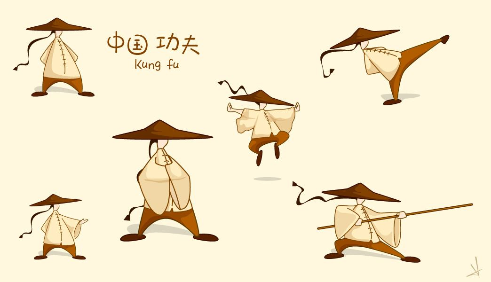

中国文化的影响，从古至今，都是被学习的榜样。古时更有周边国家派使者学习我国文化，可见我国文影响深远。


日本
在文化上，清朝极大的改变了中国的文化和形象，
例如外国人对中国的刻板印象是唐装、旗袍等旗人服装（原来是由满族的骑马褂演变而来），
而清朝男子剃头留辫也与以往中原王朝男子束发加冠不同；
中国的茶文化从宋代时期由日本僧人荣西将茶种带回日本并遍种日本，
由此茶文化在日本发展起来；乐器音律由原来的风雅清幽转变为喜庆热闹，之前多使用古筝，
琵琶等民族管弦乐器，到了清朝则大肆使用唢呐、锣鼓等音色响亮的吹奏、打击乐器；
同样建筑风格也发生巨大变化，原来的飞檐变得更加翘高，屋檐更加朝里，曲折度增加，笔直度缩短，
由原来自然写意的风格转变为更加富丽堂皇；装饰物从原来的比较多用自然纹理和植物变为更加倾向於雕龙雕凤或者历史典故。
故清朝造成本土传统汉服、音乐、建筑文化的极大改变，并且影响至今。而汉文化反而在日本有较多保留，
如和服源于汉服，日本武士刀是由唐刀演化而来，日本的音乐、建筑保留了大量中国的古曲和建筑样式（特别是唐代）。
韩国
韩国作为亚洲四小龙之一，现代化程度较高，
但韩国的现代化不是在否定和抛弃传统文化基础上的现代化，而是在对传统文化尊重、
继承和发展基础上的现代化。到过韩国的人对韩国人的爱国精神和对民族文化的自豪感都深有感触。
譬如，韩国目前最著名的大学成均馆大学，校训。每年2月和8月，韩国人还会按照传统方式到文庙去祭祀孔子，
还有完全按照传统儒家教学方式授课的学院，讲授的主要课程就是儒家的经典《四书五经》。
在中国几乎已经消失殆尽的传统县学和书院，在韩国至今还有300多所。
全球第一所孔子学院也在2004年底在韩国首都挂牌成立。韩国还将儒家文化的精神，
通过电影、电视、媒体向全社会广泛宣传。可以说，韩国是以儒家文化立国育民的成功范例，
被西方很多学者称作“儒教国家的活化石”、“典型的儒教国度”。韩国没有抛弃和否定传统文化，
而是把传统文化有机地融入到了现代社会和现代生活中。
新加坡
新加坡则从1980年代，就开始推行以中国儒家传统文化为中心内容的“文化再生”运动。
1982年春节，李光耀总理号召新加坡人民保持和发扬中华儒家的传统道德，
并把“忠孝仁爱礼义廉耻”作为政府必须坚决贯彻执行的“治国之道”。
1988年10月，第一副总理吴作栋又提议把儒家东方价值观提升为国家意识，
并使之成为每个公民的行动指南。1990年2月，新加坡政府发表了充满儒家伦理精神的《共同价值白皮书》。
该书提出了五大共同价值观为:1、国家至上，社会为先；2、家庭为根，社会为本；
3、关怀扶持，同舟共济；4、求同存异，协商共识；5、种族和谐，宗教宽容。
中国文化是华夏文明为基础，充分整合全国各地域和各民族文化要素而形成的文化

中国分化博大精深，包罗万象：琴棋书画，礼乐射御书数。。。